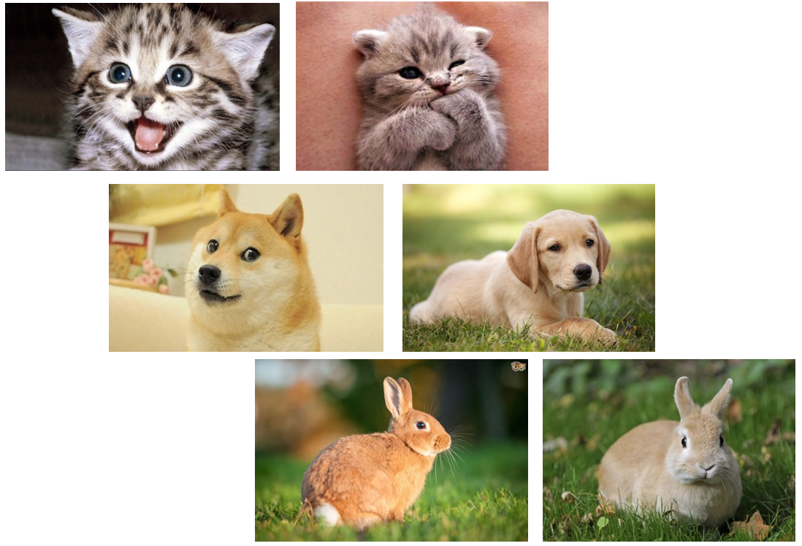

Machine learning basics, popular data sets¶
from IPython.display import IFrame
IFrame(src="https://cdnapisec.kaltura.com/p/2356971/sp/235697100/embedIframeJs/uiconf_id/41416911/partner_id/2356971?iframeembed=true&playerId=kaltura_player&entry_id=1_z2ldie17&flashvars[streamerType]=auto&flashvars[localizationCode]=en&flashvars[leadWithHTML5]=true&flashvars[sideBarContainer.plugin]=true&flashvars[sideBarContainer.position]=left&flashvars[sideBarContainer.clickToClose]=true&flashvars[chapters.plugin]=true&flashvars[chapters.layout]=vertical&flashvars[chapters.thumbnailRotator]=false&flashvars[streamSelector.plugin]=true&flashvars[EmbedPlayer.SpinnerTarget]=videoHolder&flashvars[dualScreen.plugin]=true&flashvars[hotspots.plugin]=1&flashvars[mediaProxy.mediaPlayFrom]=0&flashvars[mediaProxy.mediaPlayTo]=600&flashvars[Kaltura.addCrossoriginToIframe]=true&&wid=1_27z0chwl" ,width='800', height='500')
1. A basic machine learning problem: image classification¶
Can a machine (function) tell the difference ?
Mathematically, gray-scale image can be just taken as matrix in \(R^{n_0\times n_0}\).

The next figure shows different result from: human vision and computer representation:
An image is just a big grid of numbers between [0,255] e.g. \(800 \times 600 \times 3\) (3 channels RGB)
Futhermore, color image can be taken as 3D tensor (matrix with 3 channel(RGB) ) in \(R^{n_0\times n_0 \times 3}\).

Supervised learning Then, let us think about the general supervised learning case.
Each image = a big vector of pixel values
\(d = 1280\times 720 \times 3\)(width \(\times\) height \(\times\) RGB channel)
3 different sets of points in \(\mathbb{R}^d\), are they separable?


Mathematical problem Find \(f(\cdot; \theta): \mathbb{R}^d \to \mathbb{R}^3\) such that:
\(f(cat,\theta) \approx \begin{pmatrix} 1\\ 0 \\ 0 \end{pmatrix} \)
\(f(dog,\theta)\approx \begin{pmatrix} 0\\ 1 \\ 0 \end{pmatrix} \)
\( f(rabbit,\theta) \approx \begin{pmatrix} 0\\ 0 \\ 1 \end{pmatrix} \)
Function interpolation
Data fitting
Formulate “learning”¶
Data: \(\{x_j, y_j\}_{j=1}^N\)
Find \(f^*\) in some function class s.t. \(f^*(x_j) \approx y_j\).
Mathematically, solve the optimization problem by parameterizing the abstract function class \( \min_{\theta} \mathcal L(\theta) \)
where \( \mathcal L( \theta):= {\mathbb E}_{(x,y)\sim \mathcal D}[\ell(f(x; \theta), y)]\approx L( \theta) := \frac{1}{N} \sum_{j=1}^N\ell(y_j, f(x_j; \theta)) \)
Here \( \ell(y_j,f(x_j; \theta)) \) is a general distance between real label \(y_j\) and predicted label \(f(x_j;\theta)\)
Two commonly used distances are
\(l^2\) distance: \( \ell(y_j,f(x_j; \theta)) = \|y_j - f(x_j; \theta)\|^2. \)
KL-divergence distance: \( \ell(y_j, f(x_j; \theta)) = \sum_{i=1}^k [y_j]_i \log\frac{[y_j]_i }{[f(x_j; \theta)]_i}. \)
2. Image classification problem¶
Image classification problem¶
We consider a basic machine learning problem for classifying a collection of images into k distinctive classes. As an example, we consider a two-dimensional image which is usually represented by a tensor \(x \in R^{n_0\times n_0 \times c} = R^d\) Here \(n_0 \times n_0\) is the original image resolutuon and
\( c= \left \{ \begin{array}[rl]{rl} 1 & \mbox{for grayscale image},\\ 3 & \mbox{for color image}. \end{array} \right. \)
A typical supervised machine learning problem begins with a data set (training data)
\( \begin{aligned} D &= \{(x_j, y_j)\}_{j=1}^N, \quad \text{and} \quad A = \{ x_1, x_2, \cdots, x_N\} \\ A &= A_1\cup A_2\cup \cdots \cup A_k, ~A_i\cap A_j = \emptyset, \forall i \neq j \end{aligned} \) and \(y_j \in R^k\) is the label for data \(x_j\), with \(y_i[i]\) as the probability for \(x_i\) in classes \(i\) or \(x_j \in A_i\). Here for image classification problem, \(y_j = e_{i_j}\), if \(x_j \in A_{i_j}\) or we say \(x_j\) has real label \(i_j\). Roughly speaking, a supervised learning problem can be thought as a data fitting problem in a high dimensional space \(R^d\). Namely, we need to find a mapping such that, for any \(x_j \in A\) \( f(x_j)\approx y_j = e_{i_j} \in \mathbb R^k. \)
for data \(x_j \in A\). For general setting above, we use a probatillistic model for understanding the output \(f(x) \in R^k\) as a discrete distribution on \(\{1,\cdots ,k\}\), with \([f(x)]_{i}\) as the probability for x in the class i, namely \( 0 \leq [f(x)]_i \leq 1 \), \( \sum_{i=1}^{k}[f(x)]_{i} =1 \). At last, we finish our model with a simple strategy to choose \( argmax_i\{ [f(x)]_i : i = 1:k\} \) as the label for a test data \(x\), which ideally is close to . The remaining key issue is the construction of the classification mapping \(f\). Generally speaking, there will be a test set \(T = \{(x_j,y_j)\}_{j=1}^{M}\), with the same dimension of training data \(D\), but is not known before we finish the training process. That is to say, we can use this test data \(T\) to verify the performance of trained model \(f\) .
3. Some popular data sets in image classification¶
In this subsection, we will introduce some popular and standard data sets in image classification.
dataset |
training(N) |
test(M) |
classes(k) |
channels(c) |
input size(d) |
|---|---|---|---|---|---|
MNIST |
60K |
10K |
10 |
GRAYSCALE |
28*28 |
CIFAR-10 |
50K |
10K |
10 |
RGB |
32*32 |
CIFAR-100 |
50K |
10K |
10 |
RGB |
32*32 |
ImageNet |
1.2M |
50K |
1000 |
RGB |
224*224 |
MNIST(Modified National Institute of Standards and Technology Database)¶
This is a database for handwritten digits¶
Training set : N = 60,000
Test set : M = 10,000
Image size : d = 28 * 28 * 1 = 784
Classes: k = 10


{kind=link}